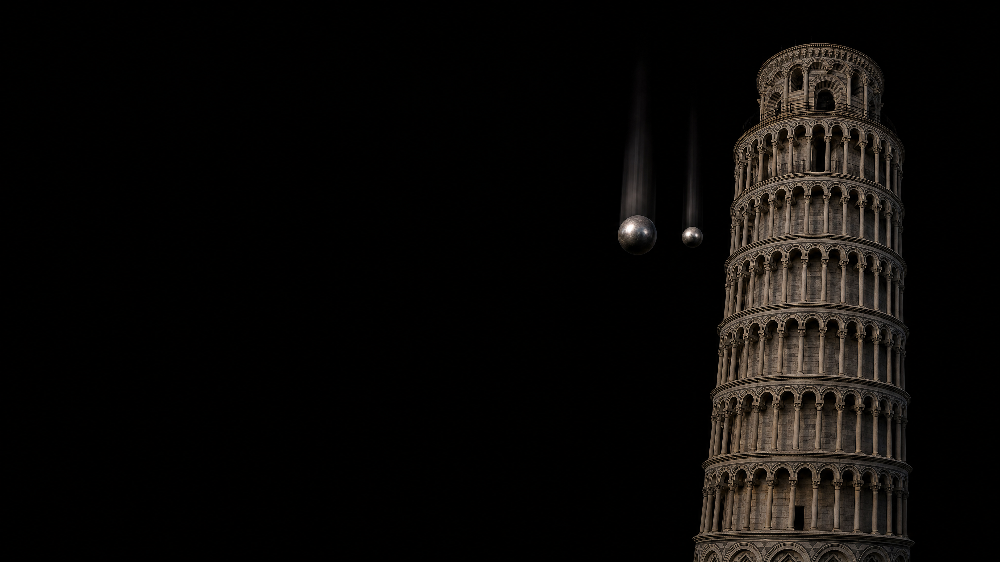

which one
lands first?
image: ai-generated (gpt-image-2)
three ways to answer the same question
an explanation is a claim. a measurement can decide.
turn a claim into a test
write the expectation before you measure.
today we live at the input
the sensor returns four numbers
your eyes see a colour. the program sees four values.
sent is not measured
not broken. normal.
measure the dark first
which value is true?
try it: one reading or a series?
a series reveals what one reading hides
report the centre and the spread.
the knob: integration time
longer is calmer.
shorter is faster.
where is your limit? measure it.
two teams improve their result
change one variable at a time.
what makes a measurement series
repeatable beats impressive.
luck or skill?
calibrate, then classify
when the assistant and the data disagree
if you did not measure it,
you do not know it.
one reading is not a measurement series.